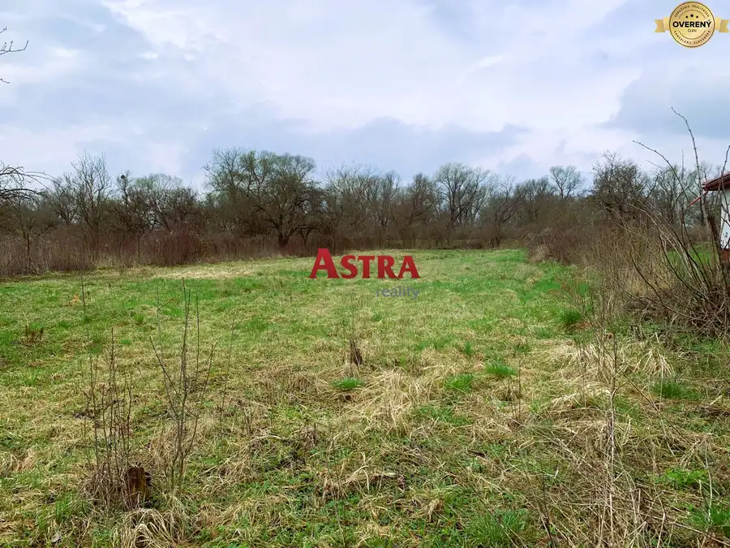
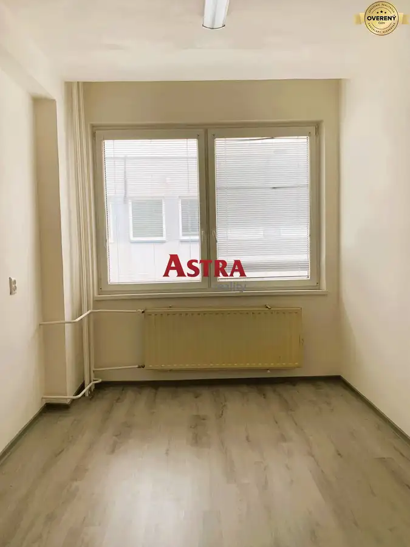
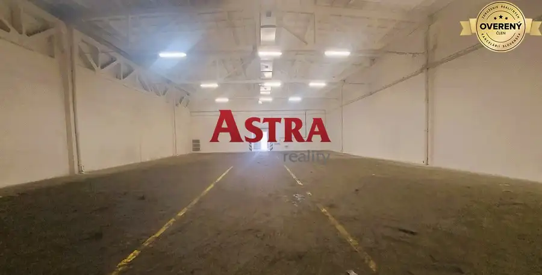

Na prenájom sklad 997 m2, Košice - Juh
mestská časť Juh, Košice
- Plocha997 m²
- Poschodie0.
- Stavpôvodný
O nehnuteľnosti
Charakteristiky priestorov:
- celková výmera 996,87 m2,
- sklad 922,43 m2,
- sociálne zázemie 74,44 m2,
- elektrina v sklade,
- 3x vykurované kancelárie,
- 2x šatne vykurované,
- 2x WC vykurované,
- možnosť prenajať si ďalšie kancelárie na poschodí,
- betónová podlaha a 3 cm asfaltová vrstva,
- samostatné merače vody a elektriny,
- plynové vedenie v sklade,
- nakladacia rampa,
- výška skladu 5,6m,
- výška brán 3,6 m,
- ideálne pre veľkoobchod, internetový obchod a skladovanie,
- výborná dostupnosť a strategická poloha v Košiciach,
- areál monitorovaný je strážený a monitorovaný.
Cena prenájmu:
3,70EUR/m2/mesiac bez DPH + prevádzkové služby 0,50EUR/m2/mesiac bez DPH. Namerané médiá (voda, elektrina, plyn) sú účtované podľa stavu merača.
Nenechajte si ujsť túto príležitosť vytvoriť si ideálne prostredie pre vašu prevádzku!
Ing. Jozef Takáč z ASTRA reality pôsobí na realitnom trhu už viac ako 8 rokov. Poskytuje kompletný realitný servis súvisiaci s kúpou, predajom a prenájom nehnuteľností. Spolupracuje s overenou právnou kanceláriu, ktorá vypracováva a autorizuje zmluvy.
Ak máte záujem detailnejšie informácie, prípadne si chcete dohodnúť obhliadku nehnuteľností kontaktujte Ing. Jozefa Takáča telefonicky na čísle .
Parametre
| Celková rozloha | 997 m² |
|---|---|
| Úžitková plocha | 997 m² |
| Poschodie | prízemie |
| Stav | pôvodný |
| Parkovanie | vonkajšie |
| Postavené z | Zmiešané |
| Energetický certifikát | nie |
| Dátum zverejnenia | 24. 2. 2026 |
Kde to je
Mohlo by Vás zaujímať

Pozemok2 87 900 €STAVEBNÝ POZEMOK 823 m– Nižná Myšľa, iba 6 km od KOŠÍC Okolie, Nižná Myšľa 823 m² ASTRA reality a Ing. Jozef Takáč ponúka rovinatý pozemok v obci Nižná Myšľa so súhlasom majiteľa. Výmera pozemku je 823 m2. Šírka pozemku je…
Nebytové priestory2 Cena dohodouPrenájom: malá kancelária 15 m2, garbiarska ulica, Košice mestská časť Staré Mesto, Košice 15 m²2. podlažie ASTRA reality a Ing. Jozef Takáč ponúka na prenájom kancelárie na Garbiarskej ulici v Košiciach. Samotná kancelária má rozlohu 15 m2. Sociálne…
Nebytové priestory3 Cena dohodouNa prenájom sklad 632 m2, Košice - Juh mestská časť Juh, Košice 632 m² Charakteristiky priestorov: - celková výmera 631,90 m2, - elektrina v sklade, - WC s umývadlom a výlevkou, - samostatné merače vody a elektriny, -…